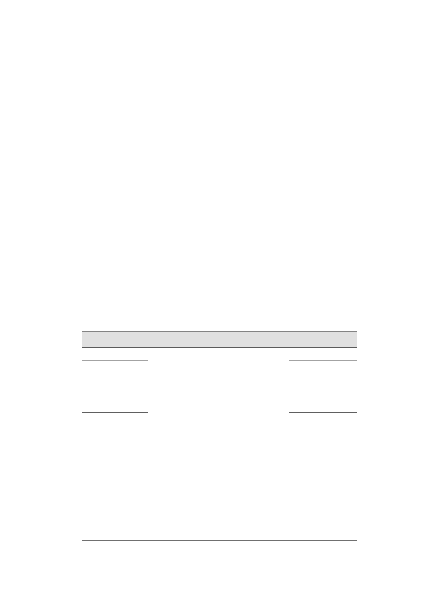

有關本計畫特定專用區未來使用項目，同意納入住宅使
用。另外，有關拆遷安置之民眾陳情及延續中正紀念堂
至永康商圈都市活動之委員建議，建請開發單位納入後
續再開發計畫擬訂考量」。
2.主要計畫復經內政部都市計畫委員會 100 年 8 月 23 日
第 762 次會議決議修正通過，決議(略以)：「......應俟臺
北市都市計畫委員會審定細部計畫後，再檢具主要計畫
書、圖報請核定」。
(三)主要計畫範圍內，因中華電信及中華郵政公司所有土地
將另案納入臺北市電信用地及郵政用地通盤檢討案內
辦理，市府爰就其餘範圍，依都市計畫法第 22 條提出
本細部計畫擬定案。
二、公展細部計畫內容
（一）訂定土地使用計畫及分區使用管制內容
1.使用分區、使用強度及允許使用
使用分區
特定專用區（一）
特定專用區（二）
特定專用區（三）
特定專用區（四）
特定專用區（五）
使用強度
建蔽率及容積
率依住三、住三
之一規定辦理
※住三建蔽率
不 得 超 過 45
％、容積率不得
超過 225％。
※住三之一建
蔽率不得超過
45％、容積率不
得超過 300％。
建蔽率 45％，容
積率為 400％。
允許使用
備註
除部分組別不得
使用以及建築物 ※特定專用區
之第一、二層限供 （二）區內有
商業及公共使用 公告登錄之
外，餘比照臺北市 歷史建築。
土管自治條例商
三辦理。
1. 未 來 可 作 為 本
府公務機關、市政
建設或公營住宅
籌備基地。
1. 特 定 專 用 區
（四）、（五）為
本計畫變更回饋
之土地。
第 2 頁 / 第 11 頁